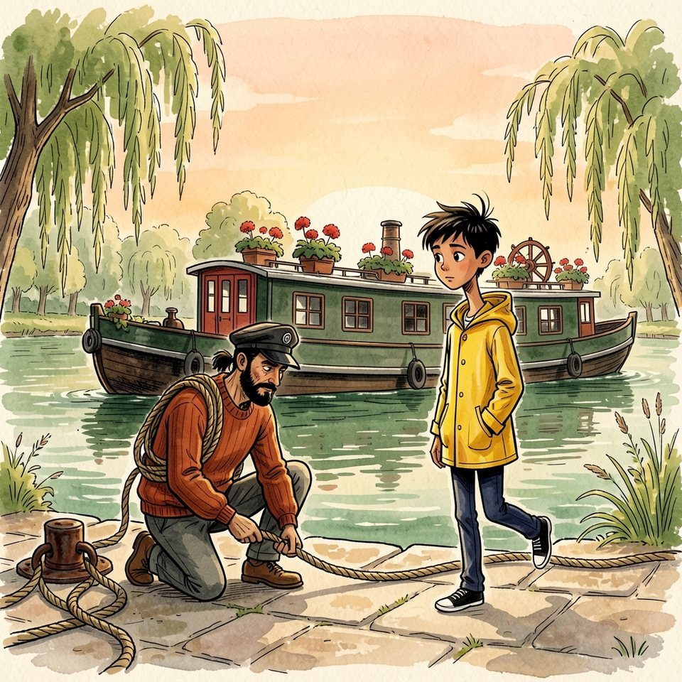

Titistoire › Les Comètes (6-8 ans)
Les douze réverbères
Une année à Virevent, l'histoire du mois de avril : Jeanne, Gaspard, Suzie et Marin.

▶ Écouter et regarder l'histoire
Gratuit, sans inscription : la voix lit, le texte suit mot à mot, les images tournent comme dans un album.
Le texte de l'histoire
Avril sentait la peinture fraîche, sur le quai des Saules. Comme chaque printemps, la mère de Marin repeignait L'Hirondelle en chantant, et il avait fallu écarter la péniche du bord.
Le soir, son père la ramena contre la pierre et renoua l'amarre à l'anneau de fer. Il ne parlait presque jamais : une phrase par jour, choisie comme on choisit un bon cordage.
« Un nœud d'amarre, déclara-t-il en serrant, ça ne retient pas le bateau. Ça lui dit où revenir. » Marin attendit la suite. Il n'y en eut pas. C'était la phrase du jour.
Revenir ? En huit ans, L'Hirondelle n'était jamais revenue nulle part. Elle repartait. Dix-sept villes, dix-sept écoles, et toujours l'amarre qu'on larguait un matin, avant d'avoir rien fini.
Voilà pourquoi Marin ne promettait rien. Ni de venir jeudi, ni de rendre lundi. Une promesse, c'était une chose qu'on laissait derrière soi sur un quai. Il répondait : « Ça m'est égal », et il avait la paix.
Le mercredi, à la sortie de l'école, Madame Bogue traversa la rue. D'ordinaire, elle ne sortait que pour crier après les ballons. Elle passa les enfants en revue, comme on choisit un melon.
« Toi, le grand. Lève le bras. » Marin leva le bras. Elle mesura de l'œil, grogna, et l'entraîna jusqu'à sa porte, sous une petite lanterne de verre bleu.
« Demain soir, je m'absente. Ma sœur a quatre-vingts ans, et elle ne les aura pas deux fois. En trente ans, je n'ai pas manqué un soir. Il me faut quelqu'un qui allume sans échelle. »
Elle lui fourra dans la main une grosse boîte d'allumettes. « Ma perche, je ne la prête pas. Tous mes réverbères, allumés avant que huit heures sonnent. Tu me le promets ? »
Marin se mit sur une jambe. « Je peux essayer. Peut-être. » « Un peut-être, ça n'éclaire personne. » Et lui qui ne promettait jamais s'entendit répondre, d'une voix qu'il ne connaissait pas : « Promis. »
Le jeudi, il reconnut son parcours comme on reconnaît un chenal. Onze réverbères, entre la butte aux Alouettes et le pont Bossu, par la place, le Fournil, l'école et le quai. Il les compta deux fois. Onze.
À sept heures, les allumettes dans la poche de son ciré, il était prêt. C'était trop tôt : le ciel était tout bleu. Mais on n'arrivait pas en retard à sa première promesse.
« Marin ! Tu ne vas pas me croire ! » Jeanne déboulait à travers la place. « Le manège rouvre ! Ce soir ! Le père Anselme a mis… » Ses joues se gonflèrent. « … mille ampoules ! »
Il y en avait une quarantaine, et c'était déjà très beau. « Je t'ai gardé une lune ! La plus haute ! » « J'ai mes réverbères. » « Ils peuvent bien attendre cinq minutes ! Regarde : il fait grand jour ! »
Il faisait grand jour, c'était exact. Tout l'hiver, Marin avait regardé ce manège dormir sous sa bâche. « Cinq minutes », répéta-t-il. Et il enjamba le rebord.
La lune de bois était trop petite pour lui : il s'y assit les genoux sous le menton. Le père Anselme passa sa bricole de cuir en travers de sa poitrine, et se mit à marcher en rond.
Le manège s'ébranla, sans musique, avec un bruit de vieux plancher. C'était comme un bateau qui n'irait nulle part et qui s'en moquerait bien. Jeanne, dans sa fusée, criait qu'elle voyait la mer.
À chaque tour repassaient le beffroi, la fontaine, le Fournil, et le premier réverbère, éteint. Au troisième tour, le ciel était rose. « Père Anselme ! Il faut que j'aille aux réverbères ! »
Le vieux haleur tendit sa bonne oreille. « Des primevères ? Y en a plein la butte, mon gars ! » Et il poussa de plus belle. Le ciel n'était plus rose. Il était violet.
Cinq minutes ! Combien en était-il passé ? Dès que le plancher ralentit, Marin déplia ses grandes jambes et sauta sur les pavés. « Mais c'est le meilleur moment ! » protesta Jeanne dans son dos.
Il courut au premier réverbère. Sur la pointe des pieds, le bras tendu, il atteignait tout juste la petite vitre. Il gratta une allumette. Le vent d'avril passa par là et la moucha.
Une deuxième. Soufflée aussi. Marin connaissait ce vent : celui qui se levait sur l'eau à la tombée du jour, et qui taquinait les lampes des bateaux. On ne le battait pas. On lui tournait le dos.
Il ouvrit son ciré jaune en grand, comme un paravent, et gratta la troisième à l'abri. La flamme tint. Il leva le bras, lentement. Une flaque de lumière se posa sur les pavés.
« Un. » Il secoua la boîte : elle sonnait déjà moins plein. Onze réverbères, un vent farceur, et des allumettes qui ne repoussaient pas. Derrière lui, le manège tournait toujours, avec le rire de Jeanne.
Le deuxième, devant le Bazar, s'alluma du premier coup. Le troisième aussi. Marin prenait le tour de main : le dos au vent, le ciré ouvert, puis le bras levé, sans trembler.
Le quatrième éclaira la vitrine du Fournil. Là-haut, les volets étaient clos : les boulangers dormaient avant tout le monde. Ils se lèveraient en pleine nuit, et trouveraient leur coin de rue allumé.
Cinq. Six. À chaque lampe, un chat traversait la lumière, quelqu'un rentrait chez lui sans se tordre les pieds. Marin n'y avait jamais songé : c'était donc à cela que servait Madame Bogue.
Mais il allumait moins vite que le soir ne tombait. Le violet du ciel tournait au bleu d'encre. Entre deux réverbères, il ne voyait plus ses propres chaussures.
Il compta du bout du doigt. Il restait huit allumettes pour cinq réverbères. Et le septième, au coin de l'école, l'attendait en plein courant d'air.
Le septième s'entêta. La première allumette s'éteignit en route. La deuxième siffla, fuma, et s'en tint là. Il en restait six. « Mariiin ! » Des semelles claquaient sur les pavés.
Jeanne arrivait, hors d'haleine. « J'ai couru plus vite que le vent ! D'ailleurs je l'ai doublé au coin du Bazar ! Ta lune tournait toute seule, c'était trop triste. »
« Mets-toi là. Contre le vent. » Elle se planta où il disait, minuscule et décidée. La flamme monta, bien droite. « Tu vois que j'ai bien fait de venir ! » Et son souffle moucha l'allumette.
Il y eut un silence. « Cinq », constata Marin. Autant que de réverbères. Jeanne plaqua ses mains sur sa bouche, puis gonfla les joues, comme devant un gâteau d'anniversaire. Cette fois, c'était pour ne rien laisser sortir.
Il gratta. Elle ne respira pas. La flamme grimpa jusqu'à la mèche, hésita, s'y installa. Sept. Jeanne relâcha tout son air, avec un bruit de ballon. « J'ai tenu une heure ! » « Dix secondes. » « C'est pareil ! »
Huit. Neuf. Jeanne trottait derrière lui en retenant son souffle à chaque lampe, par précaution. Mais la nuit gagnait. Elle avait pris les toits, puis les arbres ; elle remplissait les rues, comme une marée.
« On n'y arrivera pas ! Il fait archi-nuit ! Huit heures, c'est passé depuis une heure au moins ! » Marin leva les yeux vers le beffroi. Le cadran blanc flottait au-dessus des toits.
Huit heures moins quatre. L'horloge de Monsieur Colimaçon retardait de cinq minutes, et la cloche n'avait pas sonné. À Virevent, même la nuit attendait le vieil horloger.
Dix. Restait le pont Bossu, en plein vent. Marin avait une allumette. Une seule. Il grimpait la pente quand la cloche commença. Un coup. Deux. Trois.
Il ouvrit son ciré. Quatre. Il gratta. Cinq. La flamme se coucha, se releva. Six. Il leva le bras, si doucement. Sept. La mèche rougit. Au huitième coup, le onzième réverbère s'alluma au-dessus de la Flânette.
Du haut du pont, on les voyait tous. Onze lumières, posées sur la nuit comme les bouées d'un chenal. Marin se sentit grand, et pour une fois cela ne le gênait pas.
« Onze ! triompha Jeanne. Je raconterai que tu en as allumé cent, en pleine tempête ! » Et elle fila vers la maison haute, où l'on soupait sans attendre les retardataires.
Un pas sec monta la route. Madame Bogue rentrait, sa perche sur l'épaule comme une canne à pêche. Elle ne salua pas. Elle pointa le menton vers la ville, et compta.
Marin attendit. Il ne demandait jamais rien, mais ce soir il aurait bien voulu un mot. Elle compta jusqu'au bout. Ses sourcils se rejoignirent. « Il en manque un. »
« Onze. Le compte y est. » « Douze », trancha Madame Bogue. Marin se retrouva sur une jambe. Dans sa poche, la boîte était vide. Et la vieille dame descendait déjà le pont.
Il la suivit. Elle marchait vite, pour une dame de soixante-dix ans, et ne ralentit devant aucun réverbère. Dix. Neuf. Huit. Lequel avait-il manqué ? Il n'en trouvait aucun.
« J'ai fait toute la route, madame. De la butte au pont. » « Hm. » Il se tut. Il connaissait cela : dix-sept villes où l'on arrivait, où l'on faisait de son mieux, et où il manquait toujours quelque chose.
Au coin de l'école, Madame Bogue s'arrêta devant sa propre maison. Elle leva sa perche et toqua contre la petite lanterne de verre bleu pendue au-dessus de la porte. « La douzième. »
Elle était éteinte. Marin était passé dessous deux fois sans la voir. « Personne ne la connaît. Elle n'éclaire que mon paillasson. Je l'allume en dernier, quand la ville est faite. »
Elle se racla la gorge. « Trente ans que je rentre la dernière. C'est commode, une lumière qui vous attend. » « Je n'ai plus d'allumettes. » « Je sais compter, mon garçon. Onze sur onze. »
Alors elle fit une chose qu'elle n'avait pas faite en trente ans : elle lui tendit sa perche. Le laiton était tiède. Au bout, la petite flamme tremblait comme une feuille de saule.
« Plus haut. À gauche. Ne te presse pas. » Elle posa sa main ridée sous la sienne. La flamme toucha la mèche. Derrière le verre, une lumière naquit, grosse comme une noisette, et le paillasson devint bleu.
Ils restèrent là un instant, devant la plus petite lampe de Virevent. Puis Madame Bogue tira de son châle une boîte d'allumettes neuve, et la lui mit dans la main.
« Jeudi prochain, même heure. » « Vous retournez chez votre sœur ? » « Non. J'ai soixante-dix ans et douze lampes. Toi, tu as de grands bras. Le jeudi, tu prends le pont, je prends la place. »
Jeudi prochain. Quelqu'un comptait sur lui, dans sept jours. Marin ouvrit la bouche. Ses trois mots étaient là, tout prêts, ceux qu'il servait toujours. Ils ne sortirent pas. « Jeudi. J'y serai. »
La porte se referma sur le châle orange. Marin resta seul sous la lanterne bleue. Dans sa poche, il y avait un bout de ficelle : un enfant de mariniers en avait toujours un.
Il le passa autour de la poignée et fit un nœud d'amarre. Un tout petit, comme celui de son père à l'anneau du quai. Cela ne retenait rien du tout. Il vérifia qu'il tenait, et s'en alla.
Il rentra par le plus long, pour repasser sous chacune de ses lampes. Sur la place, la plus haute lune du manège luisait sous la toile. Jeanne la lui garderait bien jusqu'à dimanche.
Au quai des Saules, son père vérifiait l'amarre. Il regarda Marin, puis, par-dessus son épaule, les lumières de la ville. Il hocha la tête. C'était mieux qu'une phrase.
Avant d'embarquer, Marin se retourna. Onze lumières, et une douzième, toute bleue, que deux personnes seulement savaient où chercher. Elles tenaient bon. Dans sept jours, ce serait jeudi.